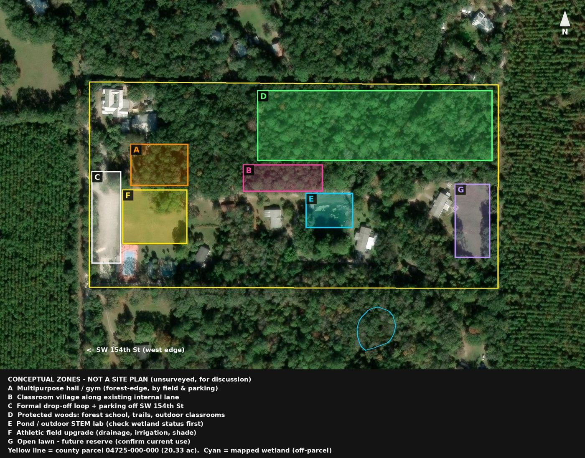
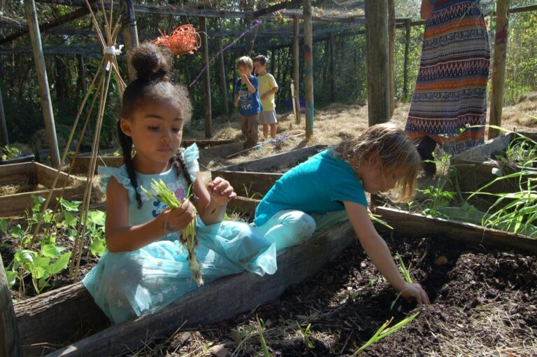
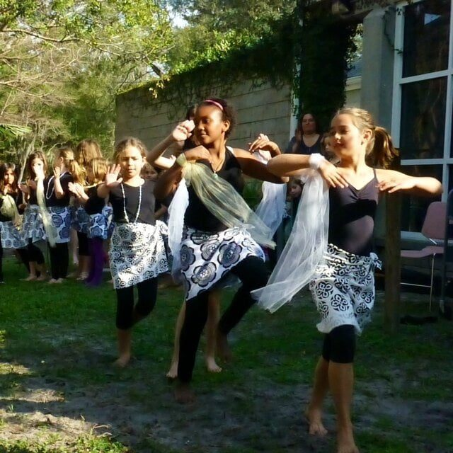
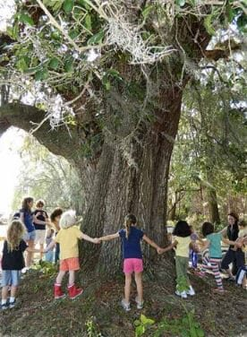

Tennis lessons / clinics
Mondays · grades K–8 · paid to the provider
Beginner 3:30–4:30 p.m. Intermediate and advanced 3:30–5:00 p.m. Dave Porter, Jonesville Tennis Center. Start dates and payment are emailed.
Campus life
Informal and respectful. First names. Morning Meeting. A ratio the school puts at 15 students to 1 teacher, on average, with parents often helping in reading groups, math groups, lunch, and electives.

Jordan Glen describes about 20 acres of field, orchard, and woods, eight miles west of Gainesville and just east of Archer. Camp materials add a large athletic field, swimming pool, tennis court, playground, activity rooms, art deck, kitchen, piano, and a multi-purpose room.
From the air, the property is a wooded block with a clearing, several buildings, a small pond, and a bright pool. The school’s pages do not name the pond. It is called out here because it is visible in the satellite view.
Directions, the map, and the phone number are on the contact page.
| What | When |
|---|---|
| Drop-off | From 8:30 a.m. |
| School day | 9:00 a.m.–3:00 p.m. Morning Meeting begins at 9:00. |
| Pick-up | By 3:00 p.m. |
| Aftercare | 3:00–6:00 p.m., Monday–Friday, $15 a day per child |
For aftercare, email info@jordanglen.org or text (352) 495-2728. The school says billing is on the first Friday of each month, and lists Billie Hanna at (352) 363-0301 as the aftercare contact.
Pack a substantial, nourishing lunch. On Fridays the school provides pizza and lemonade, so no lunch is needed that day. The activity fee covers Friday pizza.
Send at least two snacks. The school suggests fresh fruit, nuts or trail mix, granola bars, cut vegetables with hummus, and protein-rich snacks. Every child should bring a reusable water bottle. Snack donations are welcome, especially for younger students.

The school says offerings and cost can change. Several programs are paid directly to the provider, and several do not add an aftercare fee.
Mondays · grades K–8 · paid to the provider
Beginner 3:30–4:30 p.m. Intermediate and advanced 3:30–5:00 p.m. Dave Porter, Jonesville Tennis Center. Start dates and payment are emailed.
Scheduled individually · all grades
Private lessons with Benny Cannon, (352) 317-9376. Paid to the provider. No aftercare fee.
Tuesdays and Wednesdays · 3:00–4:00 p.m.
$150 per term. Term 1–3, 10 sessions. Chelsee Florence, (612) 386-1200. No aftercare fee.
Wednesdays · 3:00–4:45 p.m. · all grades
Paid to the provider. Miguel Ararat, (352) 213-9707. No aftercare fee.
Monday–Friday · 3:00–4:00 p.m.
$15 a day, including aftercare. Supervised by Jordan Glen. Students can join aftercare at 4:00 p.m.
Wednesday · 2:30–4:00 p.m. · grades 3–8
$250 annually. Run by Jordan Glen. No aftercare fee.


To schedule a tour, call (352) 495-2728 or send a message through the school’s information form. Applications and camp registration use the forms already on jordanglen.org.